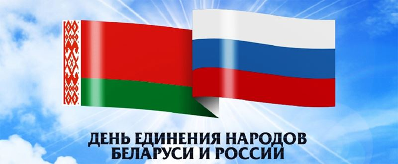
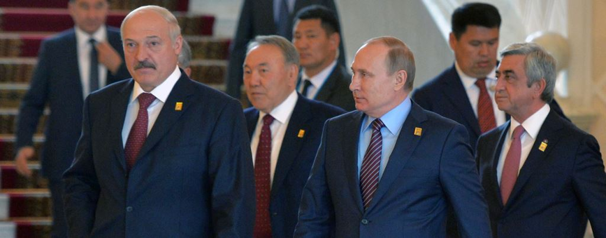
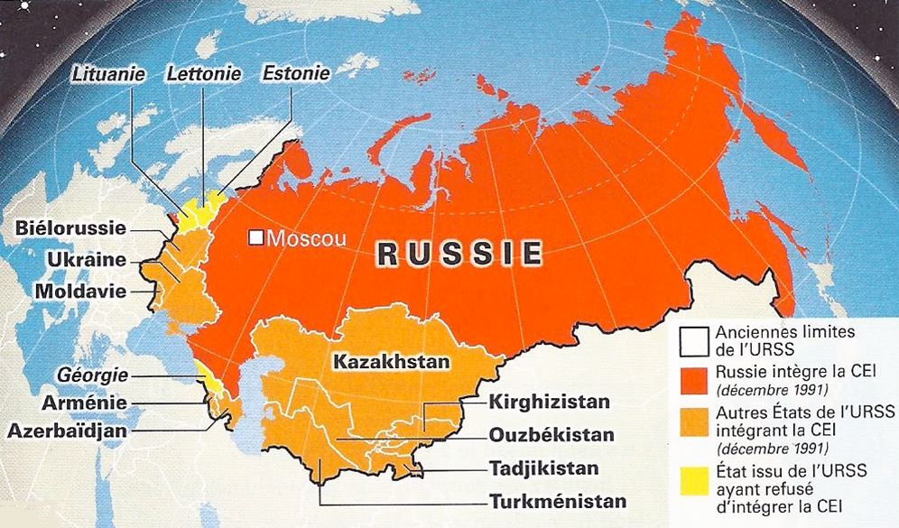
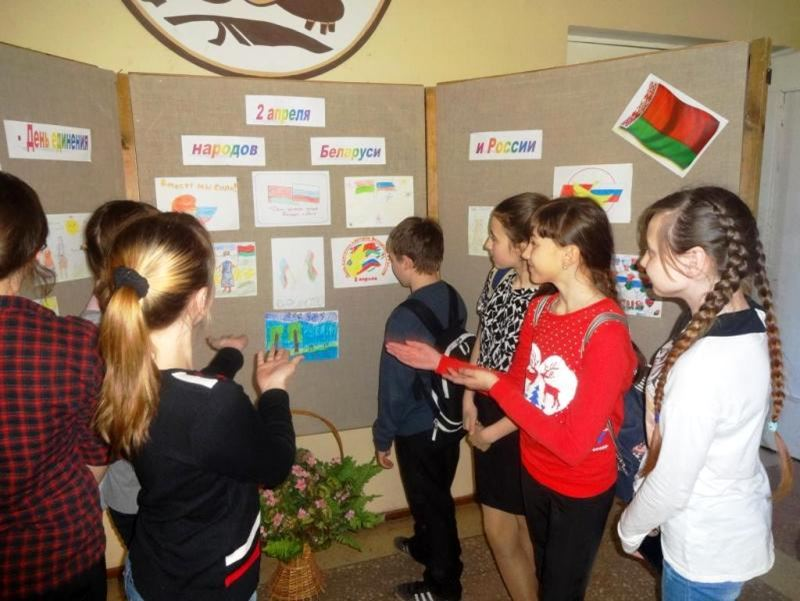
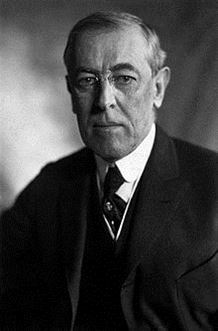
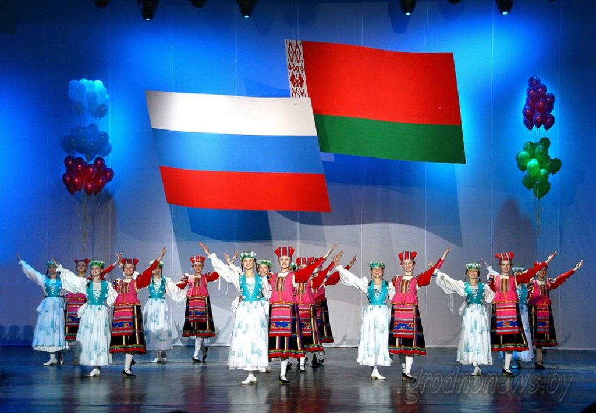
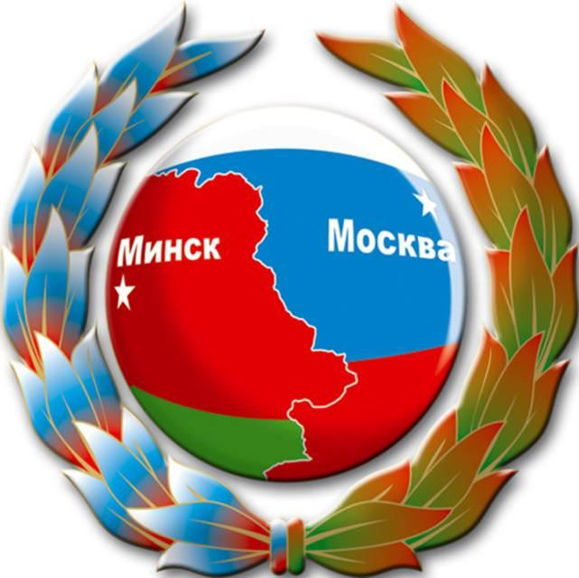
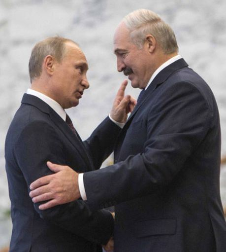
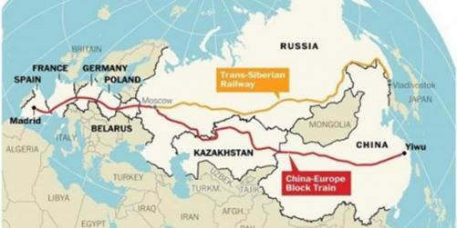
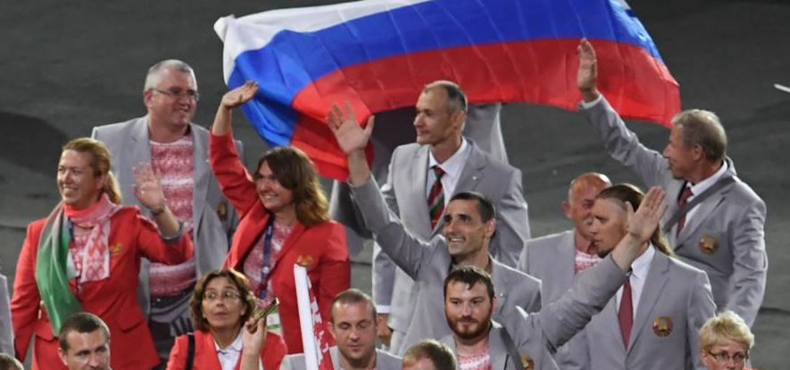

Cette intervention a été faite au Forum international de la jeunesse « Le patrimoine culturel commun de la Russie et du Bélarus »
(ville de Smolensk, le 24 avril 2017)
Récemment nous avons, le 2 avril, célébré une nouvelle fois la Journée de l'Unité des peuples du Bélarus et de la Russie. À cette occasion, les présidents des deux pays ont fait des messages traditionnels. Le Président russe Vladimir Poutine a déclaré : « Depuis plus de deux décennies, les Russes et les Biélorusses se déplacent avec confiance le long de la voie de l'intégration. Durant ce temps, nous avons réussi à faire beaucoup. Le niveau de la coopération commerciale et économique, scientifique et technique, humanitaire et les actions réciproques dans le domaine de la sécurité se sont considérablement développées. Nous réalisons un travail cohérent afin d’harmoniser les législations nationales dans des domaines clés ». Le dirigeant russe a également exprimé la confiance car « la poursuite de l'ensemble des relations mutuellement bénéfiques dans le format de l'État de l'Union répond aux intérêts fondamentaux de nos peuples frères et va de paire avec le renforcement de la stabilité et de la sécurité dans l'espace eurasien ».
Le Président biélorusse Alexandre Loukachenko, à son tour, a déclaré : « Pour nous la mémoire historique et le soutien mutuel ont toujours été au-dessus de toute considération mercantile ou des raisons tactiques, et notre devoir c’est d'être fidèle à ce choix décisif pour répondre aux attentes et aux aspirations des peuples du Bélarus et de la Russie ». Tout en notant des aspects positifs dans les processus d'intégration entre les deux États, le leader biélorusse a déclaré : « L'ampleur des réalisations [dans le cadre de l'intégration] ne doit pas être considéré comme acquis. Divers types de tests de résistance révèlent leur fragilité ».
Dans mon intervention, je voudrais parler des facteurs de fragilité qui ont attiré l'attention du Président du Bélarus. Certains reprochent à Alexandre Loukachenko d’avoir user de cette expression. Bien sûr, les plus hautes autorités de Bélarus et de Russie sont des personnalités fortes. Néanmoins cela ne signifie pas que tout ce qui se passe dans les deux pays et entre les deux pays, n’est qu’un reflet de bonne volonté ou d’absence des présidents. Les dirigeants politiques, même les plus forts, existent toujours dans le cadre de lois objectives et de processus qui ne dépendent pas d’une personne propre mais d’une politique globale. L'un de ces processus est une logique du développement d'un État national indépendant. En 1991, on a organisé un référendum sur la préservation de l’État intégré à l'Union soviétique.
Sur ce sujet 71 % de la population de la Russie et 83 % de la population du Bélarus ont exprimé le souhait que l'URSS continue d’exister. Ceci, comme nous le savons, n'a pas eu lieu, mais 15 nouvelles républiques ont été formées qui n'étaient pas auparavant sur la carte du monde.
Selon une opinion populaire, ce sont les nations qui créent des États. Autrement dit, il y a un groupe de personnes, un peuple, et à un moment donné de son histoire il se rend compte qu'il est devenu une nation, et pour être complètement heureux, il est indispensable de vivre dans leur propre État séparé de l’autre. Et ainsi un peuple devient une nation en créant un pays de son nom. Les Russes créent la Russie, les Biélorusses – le Bélarus, les Ukrainiens – l’Ukraine, les Finlandais – la Finlande, les Pakistanais – la Pakistan, etc.
Cependant, au cours des décennies récentes, ce point de vue n’est pas populaire dans les milieux scientifiques. Désormais, les savants parlent de la relation opposée entre la nation et l'État. À savoir, ce ne sont pas les nations qui créent l’État, mais plutôt c’est l’État qui créé chaque nation du peuple ou des peuples vivant sur son territoire. Ce processus est réalisé grâce aux activités de l’État par l'éducation universelle, la conscription militaire et par un appareil bureaucratique uniforme. L'éducation est donnée en langue normalisée, l'histoire est apprise par des enfants dans un certain contexte, un langage de commande et de contrôle est également commun.
Peu importe l’affinité des Russes et Bélarusses, l'existence dans le cadre de deux États séparés dicte sa logique. Lorsque vous obtenez à un moment vos armoiries, votre drapeau, votre hymne, votre passeport, votre place sur la carte de l’Europe et du monde, vous ne pouvez plus être comme vos voisins. Même si vous êtes pareils. Rappelez-vous des jours scolaires : des classes parallèles ne diffèrent que par une lettre arbitraire : la classe 6 « A », la classe « B », la classe « C », mais cette séparation formelle conduit souvent à une bagarre de masse. Moi aussi j’y ai participé : « la classe « B » est la meilleure ! ».
Nous entendons souvent la thèse que les Russes, Biélorusses et Ukrainiens (même si à vrai dire cela est de moins en moins vrai pour ces derniers) sont « des peuples frères et en fait un même peuple ». Soumettons cette thèse à un esprit critique. Tout d'abord, si nous parlons de frères, l’illustration biblique montre que celle-ci peut induire des rapports très différents. Des frères vivent séparément, travaillent dans des emplois différents, votent différemment aux élections et peuvent être même en mauvais rapports, surtout s’il s’agit d’un partage de l’héritage commun. En d'autres termes, la fraternité (si les peuples, en principe, peuvent être « fraternels ») ne signifie pas obligatoirement une sorte d'avenir ensemble.
Quand on parle du fait que les Russes et les Biélorusses sont un seul peuple, il y a une question raisonnable : pourquoi devrions-nous vivre dans deux États différents ? En vertu de la doctrine de Woodrow Wilson, il y a une centaine d'années, les peuples ont le droit à l'autodétermination et, par conséquent, à leur propre État. Mais pourquoi alors un grand peuple russe, si nous sommes un peuple uni, s’est autodéterminé en deux États ? Ou même en trois, si nous prenons en considération l'Ukraine…
Plus d’États, plus d’identités nationales et, par conséquent, plus de conflits potentiels, y compris ceux des motifs ethniques et nationalistes. Et quand il y a des contradictions entre les deux pays, par exemple, celles économiques, qui sont souvent présentées par les médias, cela ne contribue qu'à une aliénation au niveau des peuples. Autrement dit, ce sont des fonctionnaires et des bureaucrates qui partagent quelque chose, en voulant faire croire que ce sont les Russes et les Biélorusses.
La Communauté d'États indépendants qui est paru après l'effondrement de l'URSS, était en fait une forme de divorce civilisé des républiques ex-soviétiques. A contrario, l'État de l'Union du Bélarus et de la Russie est une forme d'association qui présente un processus inverse. Néanmoins, cette union russo-belarus présente des contradictions internes. Nous déclarons l'intégration, mais en même temps nous continuons à construire nos propres pays et, même sur un plan plus large, nous ne souhaitons pas déclarer une transition de l'État de l'Union dans son vrai sens premier. Jusqu'à présent, l'État de l'Union du Bélarus et de la Russie n’a pas de symbole de base, comme un drapeau. Même les états non reconnus, en commençant par les Républiques populaires du Donbass ou d’Afrique tel le Somaliland, ont leurs propres drapeaux.
On parle beaucoup de ce que nos peuples ont toujours été ensemble, c’est pourquoi on imagine qu’ils seront ensemble à l'avenir. Ceci est, bien sûr, une conclusion très agréable, optimiste. Elle n'a qu'un seul problème : elle ne correspond pas à la réalité. Un exemple très récent : je vous rappelle qu'il y a quatre ou cinq ans, nous avions entendu les mêmes mots sur l’amitié indéfectible entre la Russie et l’Ukraine, qu’aucun ennemi ne pourrait détruire. Hélas, c’est possible, les techniques sont connues et extrêmement efficaces.
Quelle que soit votre affinité avec quelqu’un, quand vous avez votre propre état indépendant, vous pouvez faire tout ce que vous voulez : conclure des alliances et les déchirer, conclure des accords et les abandonner, faire le commerce avec les uns et imposer des sanctions aux autres, écrire et réécrire les manuels d'histoire comme le dicte l'opportunisme politique et la logique de l'État-nation souverain. L'historiographie des nouveaux États post-soviétiques indépendants se caractérise, par exemple, par l'attitude critique et même hostile à l'égard de la période impérialiste et soviétique qui sont interprétés comme une occupation de tel ou tel territoire par la Russie, peu importe comment on l'appelait – la Moscovie, l'Empire russe, l'Union soviétique ou la Fédération de Russie.
La réalité n’a pas vraiment d’importance, l’important est comment l’enseigner. Si vous apprenez dès le plus jeune âge, que les Russes sont les ennemis, alors c’est avec la peur que vous vous méfiez de tout ce que fait la Russie, y compris même si ce sont des projets économiquement profitables.
On dit que la Russie et le Bélarus ont des fondations civilisationnelles communes, qui assurent notre unité à long terme. Il est difficile de discuter à propos de base civilisationnelle commune. Mais des conflits, y compris ceux les plus sanglants, dérivent souvent malgré une même civilisation. Rappelez-vous les guerres brutales en Europe ou, par exemple, l'instabilité actuelle dans le monde arabo-musulman.
En même temps, nous devons comprendre que la civilisation, par définition, est quelque chose qui est transmis à travers les arts, la science, la culture, et surtout par un système de symboles. Les symboles ne commencent pas dans le sein maternel, ces symboles sont appris par le système d'éducation. Les systèmes d'éducation dans le Bélarus et en Russie peuvent choisir de maintenir ces symboles communs ou non. Par exemple, au Bélarus il y a une certaine tendance à interpréter son histoire à travers le prisme de l’identité lituanienne et balte-lituanienne.».
En Russie aussi, non que tout soit parfait, mais cette tendance va plutôt vers « l’eurasisme ».
Pour la Russie, comme pour les autres grandes puissances, que ce soit des États-Unis ou la Chine, la question sur l’intégration, en règle générale, ne se pose pas. Nous sommes trop grand, c’est à nous qu’on se rejoint généralement dans le cadre de telles ou telles alliances. Mais là c'est la Russie… Pour le Bélarus et d'autres pays indépendants de l'espace post-soviétique, la question d’une alliance ou d’une adhésion est une question clé. Et cette question est plutôt politique que strictement économique.
En Europe d’aujourd'hui, il y a essentiellement deux systèmes principaux : l'Union européenne et une union autour de la Russie. Si au point de vue économique l'intégration eurasienne est bénéfique pour le Bélarus, au niveau de « l’image », le choix européen est également attractif. Qu'évoque l'Eurasie ? Dans le meilleur des cas la Chine et au pire le film « La Horde ». Une telle vision de l'avenir peut repousser la jeune génération de Bélarus, aussi bien que celle des Russes.
De toute évidence, le concept du « Monde russe », en tant que partie intégrante de la Grande Europe, est beaucoup plus attractif et prometteur. De plus, malgré tous les discours sur la montée imminente de la Chine, il faut comprendre que l'hégémonie mondiale c’est non seulement l'économie, mais également Les technologies, la puissance militaire et la culture. Des technologies et la culture mondiales sont produites et seront produites par l'Ouest mondialisé. Et nous parlerons russe ou, avec des étrangers, anglais, mais il serait très étonnant que ce soit en chinois.
Ainsi, pour former une image de l'avenir commun du Bélarus et de la Russie, il est nécessaire de prendre en considération trois points :
1) L'unité du Bélarus et de la Russie, dans le cadre d’une approche civilisée et dans le cadre d’un État de l'Union, doit être perçue par nous non pas comme un fait fixé, mais comme un objectif, comme un objectif optimal, comme un projet. Nous avons donc besoin d’une planification à long terme.
2) La crise actuelle de l'Union européenne contribue au processus d'intégration de l'État de l'Union, car elle réduit l'attractivité de l'UE pour les citoyens et les forces politiques du Bélarus et de la Russie. Toutefois, les processus socio-économiques et politiques en Union européenne continueront d'avoir un impact sur nos pays.
3) Le maintien de l'unité des peuples russe et biélorusse exige un travail sérieux, y compris par le système d’éducations des deux pays, à travers des activités médiatiques et des activités d’organisations à but non lucratif qui favoriseront une intégration plus poussée dans l'État de l'Union.
Tout cela n'est pas facile, mais le chemin se fait en marchant.
Partager cette page